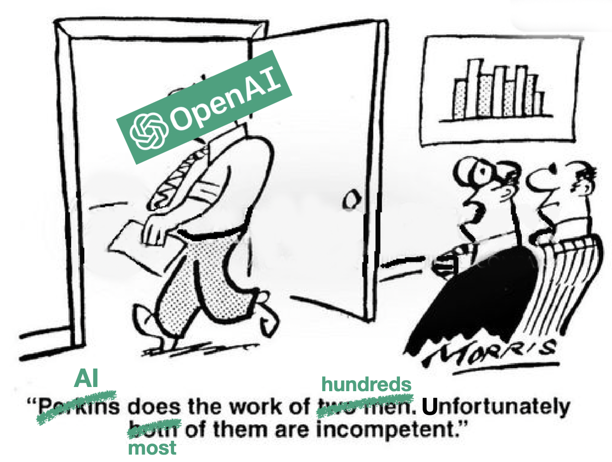
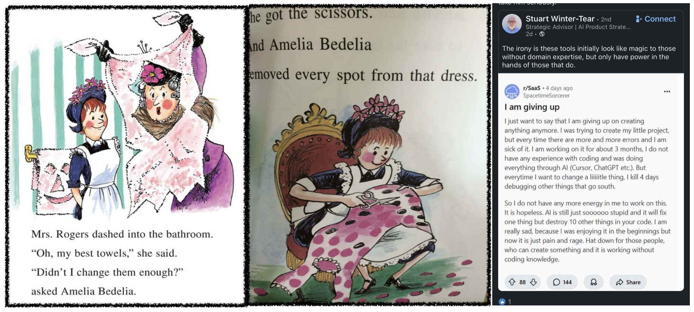
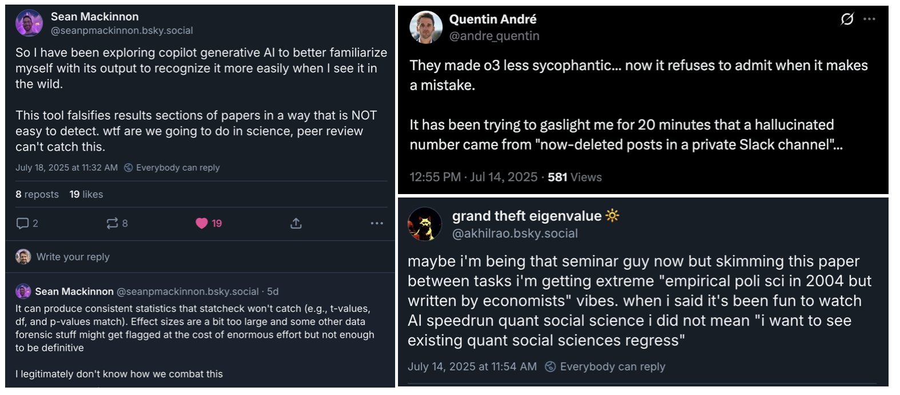

Is ChatGPT worth your time? AI & the Amelia Bedelia problem
Bad speed-accuracy tradeoffs
Speed versus Accuracy
Most general-audience conversations about AI focus on its accuracy: benchmarks beaten, hallucinations still occurring, and some vague notion that opinions are still divided between the extremes of the “AGI is just around the corner” camp (it’s absolutely not) and the “Large Language Models are just fancy lookup tables” camp (they’re absolutely not, but “fancy lookup table” is closer than “super-intelligent machine god” and a lot easier to explain than transformers, next-token prediction, and the weird statistics of large corpora).
AI’s speed is mostly taken for granted. And to be fair, it’s hard to interact with any commercial AI for any length of time and not get the impression that they could do the work of dozens of desk jockeys in a fraction of the time (and without asking for bonuses or health insurance or lifestyle perks). No human can write a 3-5 paragraph essay in seconds; but an LLM can, on whatever topic you like, and it will do it in iambic pentameter to boot if you ask. A lot of the capital invested in AI seems to be riding on the bet that LLMs will relatively quickly recap the last 200 years in the development of the labor-saving devices that first spurred the industrial revolution and then slowly replaced most physical labor with machines. But, given the number of startups selling ChatGPT-wrappers as “A” solutions that claim to automate workflows - and whole domains - the makers themselves know nothing at all about, I think a lot of those investments are hasty bets.
The thing is, speed isn’t inherently valuable. Speed tends to make outcomes (products, decisions, judgments) worse. So, it’s only valuable to the extent that the time saved is more important than the quality lost. It’s called a speed-accuracy tradeoff. In the history of industrial automation, the tradeoffs often made sense: even though expert craftspeople made better products than the machines that replaced them, the machine-made products were good enough that their huge advantage in speed made up for the loss of quality. But in the case of cognitive automation, that’s going to be harder to achieve. The reason is what you might think of as the Amelia Bedelia problem.
The Amelia Bedelia Problem
Amelia Bedelia is a maid in a children’s book series who tends to take language at face value, without understanding the intent behind it. As a result, asking her for help is often more trouble than it’s worth. Her boss, Mrs. Parish, asks Amelia to get the spots out of her dress, and Amelia does: she gets a pair of scissors and cuts out all the polka dots. Mrs. Parish asks Amelia to draw the curtains, and Amelia gets her pencils and sketches a picture; she asks her to change the towels in the bathroom, and Amelia diligently gets her scissors to make some alterations. Having a maid is supposed to save you time as well as trouble, but when the Parishes get home, the tasks they wanted help with haven’t even been started - and they have to spend time re-instructing Amelia and cleaning up her messes before they can even get started on what they wanted to have done already. In other words, the speed-accuracy tradeoffs of asking Amelia for help just don’t pay off.
The speed-accuracy tradeoffs of asking LLMs for help often don’t pay off either, for very similar reasons: like Amelia, LLMs don’t understand what’s being asked of them. The problem is that human languages are ambiguous (e.g., “drawing curtains” and “changing towels”), unlike formal languages (mathematical logics, programming languages, etc). So, figuring out what people mean by what they say requires some legwork. You have to compare what someone says to the beliefs and intentions you would expect that specific person to have, given the aspects of the world around them that you take to be most relevant to them at them at that specific moment (which typically includes you or whoever they’re talking to, their beliefs about you, and often their beliefs about what you believe about them). In humans and some other species, that legwork is done by what cognitive scientists and philosophers of mind call “theory of mind” (ToM for short, or sometimes just “mentalizing”). Language is just one part of ToM. The more critical part, which doesn’t require language (although it can certainly help) is being able to figure out what people believe, want, and intend. That’s the part that allows you to more quickly and accurately coordinate (beliefs-goals-behaviors) with them, and probably what ToM evolved to do. Without ToM, the speed-accuracy tradeoffs of asking / offering help probably wouldn’t pay off.

An assistant that doesn’t understand what you’re asking will cost you more time than they save
Theory of mind makes humans really good at efficiently communicating intentions
Suppose your spouse is going to grill chicken, and calls out “would you grab the bag of charcoal from the bottom shelf in the basement pantry?” The bag of charcoal you see on the bottom shelf is almost empty, but you see a new bag on the top shelf. What do you do? Because of ToM, you don’t have to spend time cross-checking the mismatch with them. You can see that there’s not enough charcoal in the bag they mentioned to make grill with. You also know your pantry doesn’t have more bags of charcoal than these two, and ToM tells you that like most people, they’d want to use up one before opening the other. You know that they weren’t looking at what you’re seeing down here in the basement, so ToM tells you that they must not have known that bottom bag didn’t have enough chips - or they may have forgotten, or simply wanted to remind you there was an old bag to use up before opening another. And because of ToM, you know that regardless of what they said, their goal is to grill chicken. So, ToM tells you to bring both bags of charcoal, ensuring that they have enough to grill the chicken, and can use up the one that’s almost empty before opening the new one. That understanding of how to respond to your spouse’s request isn’t something that’s decodable from just the language they used.
But what’s critical from a speed-accuracy perspective is that because your spouse can trust you to make those judgments yourself, they don’t feel the need to spend time specifying them in advance, and don’t expect you to spend time asking for clarification, either. If they couldn’t be sure you’d understand what they wanted, it might have turned out to be faster to go get the chocolate chips themselves than to spend extra time and effort trying to shout clarifications back and forth on the basement stairs, or trying to give exhaustive instructions from the outset (“I need about 30 or 40 briquettes, so check whether the open bag on the bottom shelf has enough, and bring it if it does; otherwise bring the unopened bag on the top shelf too”). ToM makes humans very very good at managing these kinds of speed-accuracy tradeoffs when we’re collaborating with others, in a way that LLMs are not.
No theory of mind makes LLMs inefficient helpers, at best
Since we can’t rely on LLMs to do ToM reasoning, we have to be extra specific. But it’s a weird, Amelia-Bedelia kind of specificity that becomes incredibly difficult to get right whenever projects are relatively complex or niche. Anyone who has interacted with any commercial AI in a serious way has encountered something like it. The reddit post above puts it in a nutshell, but the lesson here is that any request you make to an LLM is going to involve spending time on some combination of (1) explaining yourself in exhaustive detail (relative to what you’d need to do for another non-Amelia human) in order to ensure the LLM has enough context to give a useful answer, (2) crosschecking the LLM’s responses to catch hallucinations, (3) re-prompting to try to tweak not-quite-right-output, and occasionally (4) dealing with things like its weird alternations between apologizing for an absurd mistake (as it proceeds to make another absurd mistake) and denying that it’s made any mistakes at all.
All of the time you spend doing that has to be subtracted from the time you “saved” by asking it for help in the first place. And that’s before you even start to account for all the time you and everyone else will have to waste on problems caused by other people using AI to either deliberately pump out bullshit, or simply using it without enough concern for getting high-quality/accurate output. In short, once you add up all of those inefficiencies, it’s much less clear that AI is going to save you any time, much less beat the speed-accuracy tradeoffs.

Sacrificing speed for quality comes back to bite you
Is asking ChatGPT worth your time? A rule of thumb
To be clear, I’m not saying that there won’t be any use-cases where AI has good speed-accuracy tradeoffs: it will consistently save time in some contexts, just like it’s consistently accurate in some contexts. For instance, OpenAI’s o4 model has never given me regex code that doesn’t work, which is consistent with the general pattern of people finding it pretty useful for coding & programming - at least simple/small-scale coding.
What I’m saying is that when an LLM is worth your time, it won’t be because they’ve replaced human expertise. It will be because the solutions to the problem are so commonly known that the LLM will be able to find them without understanding either the problem you’re trying to solve or what would count as a solution for you.
But if the problem you’re trying to solve is the kind where you’d balk if someone said “let’s send Amelia Bedelia to ask the experts what they think we should do”, you should also balk at someone suggesting you rely too much on an LLM.